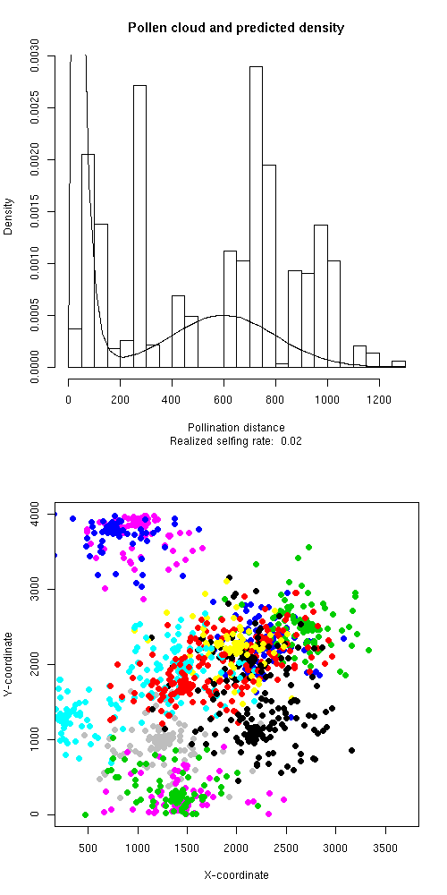
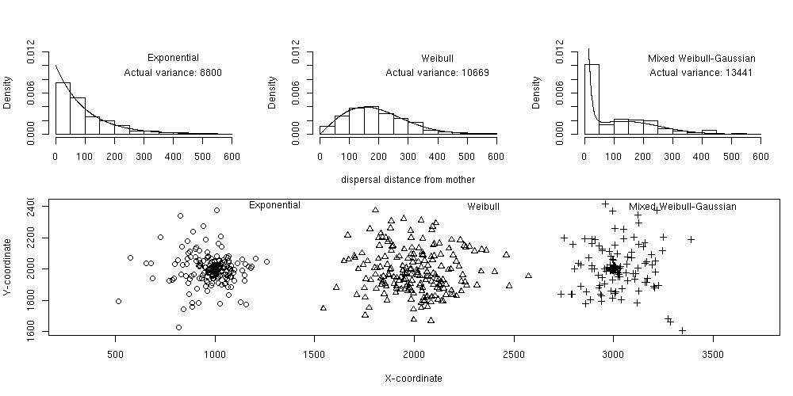

kernelPop
Additional help page
Although all of the user-accessible functions are documented to some
degree or another through R's help() system, files accessible from this
page are provide more information on how to actually use the functions
to ask and answer questions
The main introduction to using kernelPop: kernelPop-intro.pdf
This file gives an overview of the data structure and shows some sample
analyses.
The R code extracted from this file is: kernelPop-intro.R
Below are some R files that contain code useful for
examining dispersal kernels in kernelPop.

pollen-kernel.R
This code simuates different pollen kernels and allows you to look at
the results compared to prediced from the input pdf
These two seed-kernel files are similar in function. They
provide some insight into constructing kernelPop models as well.
seed.kernel.R, seed.kernel.stage.R
